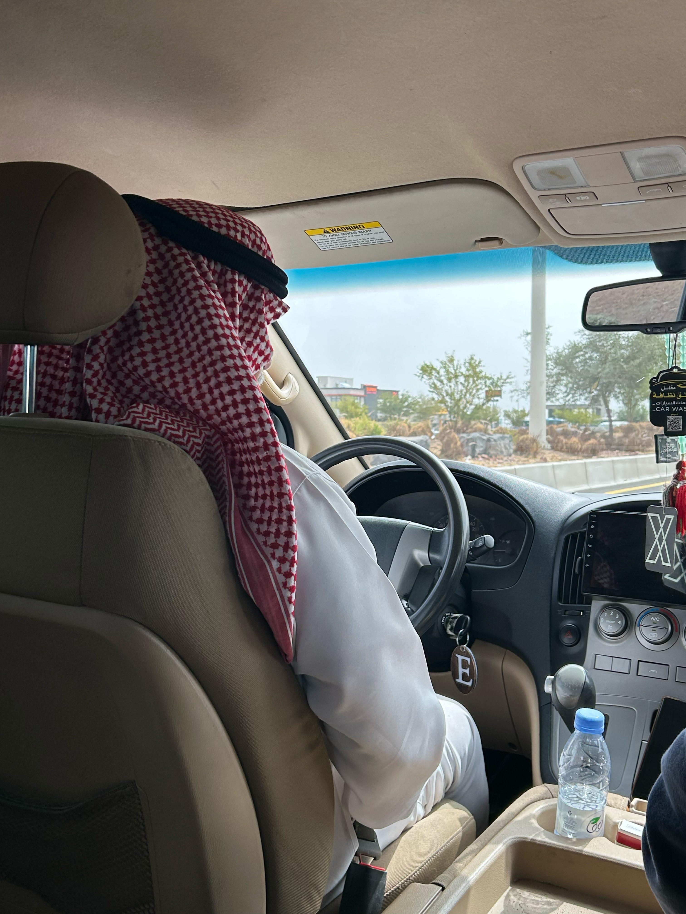
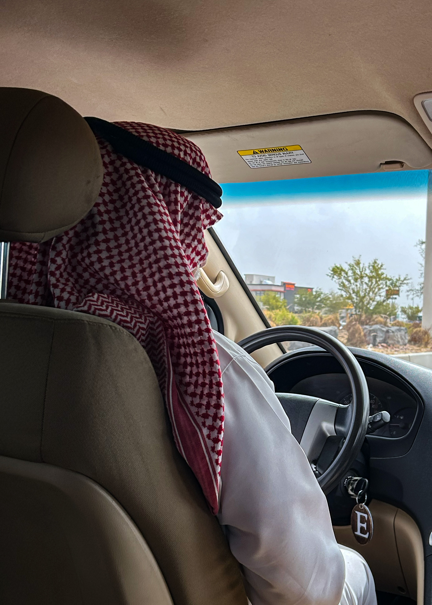
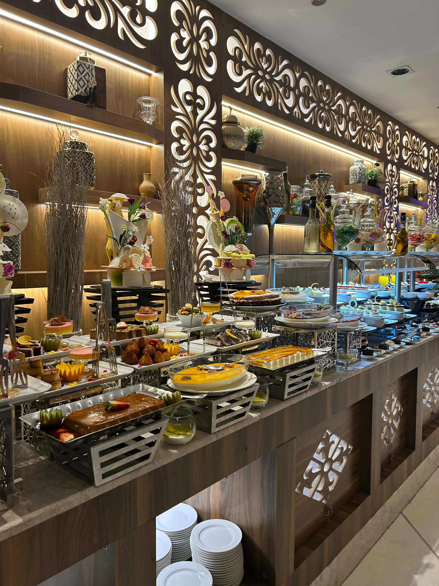
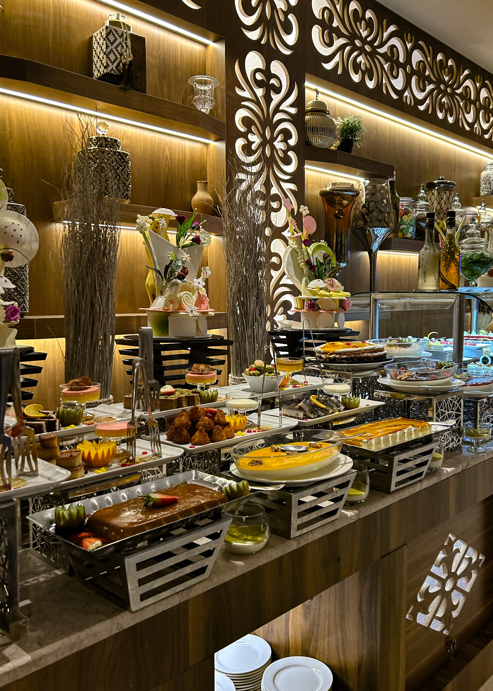

On this page you will see the two edited images that I have corrected
from either underexposure, overexposure, tilted images or even unwanted blur.


Above are images of the taxi driver that got me from Medina airport to Masjid Al Nabawi. What I have done is that I just created the image to be more straight and for it to be a lot less noisy.


Above is the image of the buffet that I was at, containing a variety of pastries. The difference is the readjustment that I have done for the Image and made it a bit more darker.